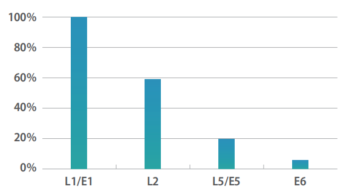
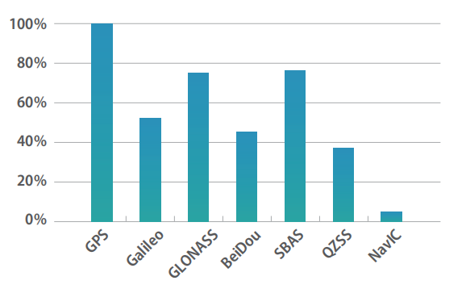
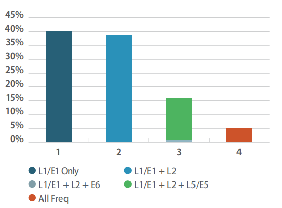
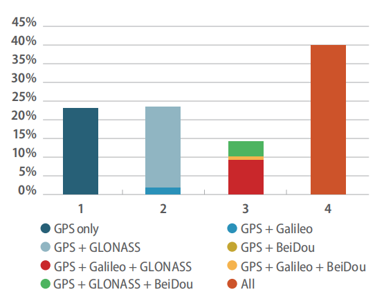

GNSS定位技术现状分析
文章目录
GNSS高精度定位解决方案发展现状简要分析
PPP
介绍
RTK（Real - time kinematic）实时动态差分法。这是一种新的常用的GPS测量方法，以前的静态、快速静态、动态测量都需要事后进行解算才能获得厘米级的精度，而RTK是能够在野外实时得到厘米级定位精度的测量方法，它采用了载波相位动态实时差分方法，是GPS应用的重大里程碑，它的出现为工程放样、地形测图，各种控制测量带来了新曙光，极大地提高了外业作业效率。
高精度的GPS测量必须采用载波相位观测值，RTK定位技术就是基于载波相位观测值的实时动态定位技术，它能够实时地提供测站点在指定坐标系中的三维定位结果，并达到厘米级精度。在RTK作业模式下，基准站通过数据链将其观测值和测站坐标信息一起传送给流动站。流动站不仅通过数据链接收来自基准站的数据，还要采集GPS观测数据，并在系统内组成差分观测值进行实时处理，同时给出厘米级定位结果，历时不足一秒钟。流动站可处于静止状态，也可处于运动状态；可在固定点上先进行初始化后再进入动态作业，也可在动态条件下直接开机，并在动态环境下完成整周模糊度的搜索求解。在整周末知数解固定后，即可进行每个历元的实时处理，只要能保持四颗以上卫星相位观测值的跟踪和必要的几何图形，则流动站可随时给出厘米级定位结果。
RTK
网络RTK
一、GNSS高精度定位的主要特征和关键参数
1 测绘领域用户的主要特征
作为 GNSS 解决方案的高级用户，测绘专业人员正受益于接收机技术的显著改进，例如在多星座 GNSS 时代到来后信号的高可用性、价格下降和多重可用性。包括土地测量 ( 地籍、建筑和矿山 )、测绘和海洋测量 ( 海洋地籍、水文和海洋测量 ) 在内的若干部门受益于基于 GNSS 的高精度解决方案的推广。多星座和多频接收机以及各种差分校正技术 (SBAS、RTK 和 DGNSS) 和精密单点定位（PPP），是目前测绘部门的首选方案。
2 关键性能参数
关键性能参数很大程度上取决于所完成的特定应用。
（1）精度 对于不同的操作，精度要求从米到亚米到厘米不等。它通过部署多星座和多频接收机以及利用RTK、PPP、SBAS 或其组合来实现。某些农业活动( 例如，固定道 ) 不仅要求通行精度，而且对逐年 累积误差 (GNSS 漂移 ) 提出了要求。
（2）可用性 特别是在信号接收环境变差或农村地区，可用性变得至关重要。
（3）首次定位时间 改进的“首次定位时间”和（重新）收敛时间转化为在测量项目上花费的总时间减少，随后可降低成本。
（4）完好性 完好性对生命安全 ( 和设备 ) 应用 ( 即机械控制 ) 至关重要，并且与资本密集型应用 ( 例如采矿和海上应用 ) 相关。
（5）连续性 连续性对于将由于卫星接收信号不良导致的运行停机时间减到最小至关重要 ( 例如，海洋工程 )。
二、高精度接收机发展现状
1 采用多星座模式
几乎所有高精度细分领域的用户都受益于使用多星座接收机。这包括提高可用性 ( 特别是在信号衰减的环境、城市峡谷或农村地区 )、更快地求解模糊度、获得更大的覆盖范围 ( 尤其是北纬地区 )、增加的适应性 ( 特别是对授时用户 ) 和改进的卫星几何因子。因此，目前针对专业应用的绝大多数接收机能够处理至少两个星座的信号，而 40％具有跟踪四个星座的能力。
2 采用多频模式
只有使用多频接收机，才能满足一些对精度要求很高的应用场合（包括农业应用中的自动转向和多次测量操作）。这是通过从位置计算中消除电离层误差和有效减少多径效应来实现的。同样地，采用伽利略 E5、GPS L5 以及伽利略 E6 使得三频接收机类型增多，使得 PPP 和差分定位的收敛时间显著减少。使用三频接收机的另一个好处是增加了抗干扰的能力。
   
三、驱动因素和发展趋势
文章作者 GSir
上次更新 2019-04-29